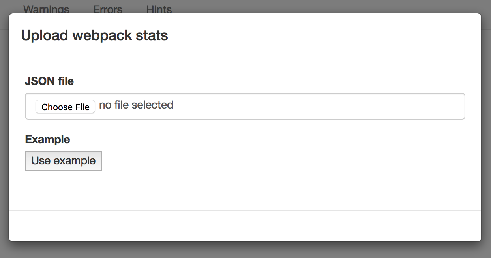
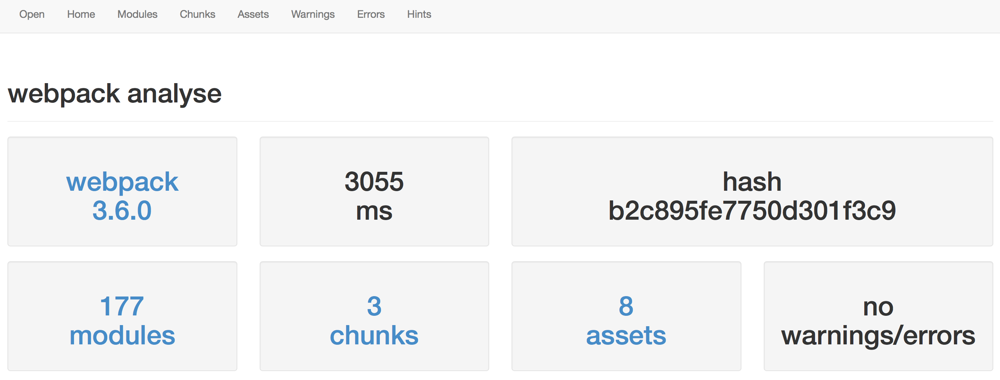
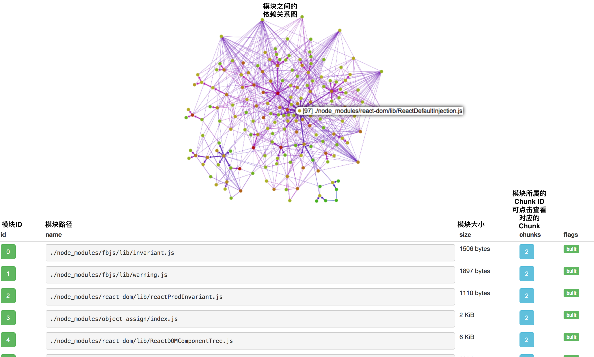
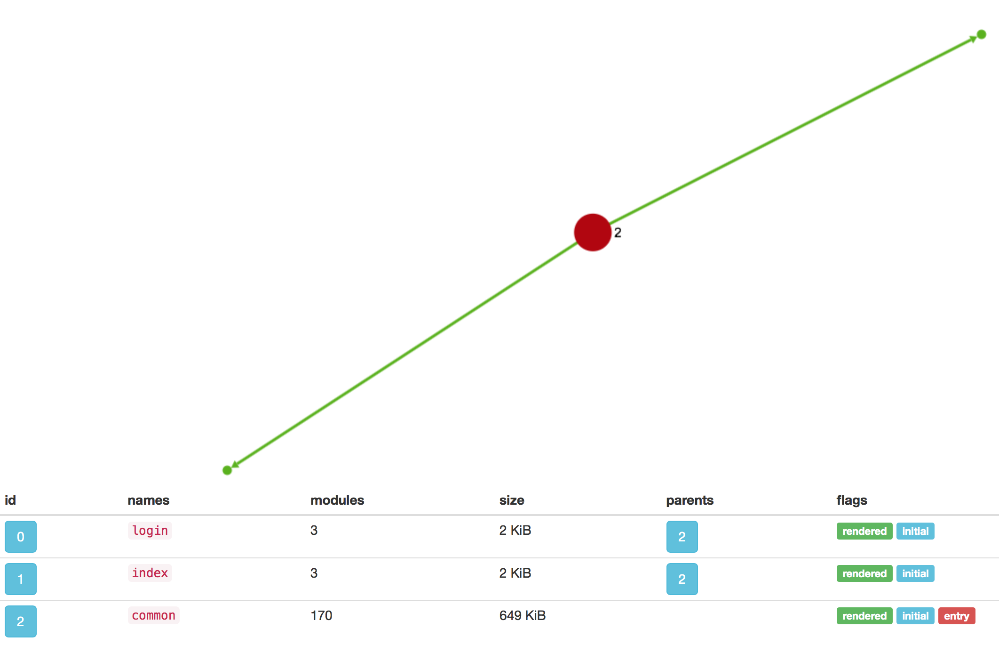

输出分析
前面虽然介绍了非常多的优化方法，但这些方法也无法涵盖所有的场景，为此你需要对输出结果做分析，以决定下一步的优化方向。
最直接的分析方法就是去阅读 Webpack 输出的代码，但由于 Webpack 输出的代码可读性非常差而且文件非常大，这会让你非常头疼。 为了更简单直观的分析输出结果，社区中出现了许多可视化的分析工具。这些工具以图形的方式把结果更加直观的展示出来，让你快速看到问题所在。 接下来教你如何使用这些工具。
在启动 Webpack 时，支持两个参数，分别是：
--profile：记录下构建过程中的耗时信息；--json：以 JSON 的格式输出构建结果，最后只输出一个.json文件，这个文件中包括所有构建相关的信息。
在启动 Webpack 时带上以上两个参数，启动命令如下 webpack --profile --json > stats.json，你会发现项目中多出了一个 stats.json 文件。
这个 stats.json 文件是给后面介绍的可视化分析工具使用的。
webpack --profile --json会输出字符串形式的 JSON，> stats.json是 UNIX/Linux 系统中的管道命令、含义是把webpack --profile --json输出的内容通过管道输出到stats.json文件中。
官方的可视化分析工具
Webpack 官方提供了一个可视化分析工具 Webpack Analyse，它是一个在线 Web 应用。
打开 Webpack Analyse 链接的网页后，你就会看到一个弹窗提示你上传 JSON 文件，也就是需要上传上面讲到的 stats.json 文件，如图：

Webpack Analyse 不会把你选择的 stats.json 文件发达到服务器，而是在浏览器本地解析，你不用担心自己的代码为此而泄露。
选择文件后，你马上就能如下的效果图：

它分为了六大板块，分别是：
- Modules：展示所有的模块，每个模块对应一个文件。并且还包含所有模块之间的依赖关系图、模块路径、模块ID、模块所属 Chunk、模块大小；
- Chunks：展示所有的代码块，一个代码块中包含多个模块。并且还包含代码块的ID、名称、大小、每个代码块包含的模块数量，以及代码块之间的依赖关系图；
- Assets：展示所有输出的文件资源，包括
.js、.css、图片等。并且还包括文件名称、大小、该文件来自哪个代码块； - Warnings：展示构建过程中出现的所有警告信息；
- Errors：展示构建过程中出现的所有错误信息；
- Hints：展示处理每个模块的过程中的耗时。
下面以在 3-10管理多个单页应用 中使用的项目为例，来分析其 stats.json 文件。
点击 Modules，查看模块信息，效果图如下：

由于依赖了大量第三方模块，文件数量大，导致模块之间的依赖关系图太密集而无法看清，但你可以进一步放大查看。
点击 Chunks，查看代码块信息，效果图如下：

由代码块之间的依赖关系图可以看出两个页面级的代码块
login和index依赖提取出来的公共代码块common。
点击 Assets，查看输出的文件资源，效果图如下：

点击 Hints，查看输出过程中的耗时分布，效果图如下：

从 Hints 可以看出每个文件在处理过程的开始时间和结束时间，从而可以找出是哪个文件导致构建缓慢。
webpack-bundle-analyzer
webpack-bundle-analyzer 是另一个可视化分析工具， 它虽然没有官方那样有那么多功能，但比官方的要更加直观。
先来看下它的效果图：

它能方便的让你知道：
- 打包出的文件中都包含了什么；
- 每个文件的尺寸在总体中的占比，一眼看出哪些文件尺寸大；
- 模块之间的包含关系；
- 每个文件的 Gzip 后的大小。
接入 webpack-bundle-analyzer 的方法很简单，步骤如下：
- 安装 webpack-bundle-analyzer 到全局，执行命令
npm i -g webpack-bundle-analyzer； - 按照上面提到的方法生成
stats.json文件； - 在项目根目录中执行
webpack-bundle-analyzer后，浏览器会打开对应网页看到以上效果。
本实例提供项目完整代码